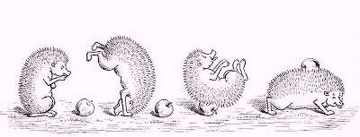

Борис Акунин
Мой календарь
Интересная идея, мне нравится: отвести один из последних дней года для нытья. Американцы придумали - им вообще принадлежит авторство большинства новых идей, как хороших, так и плохих. 26 декабря - Whiner’s Day, День Нытика.
Ныть часто - привычка вредная и стыдная. Но раз в году, в специально отведенном для этого закутке, позволительно.
В этот год произошло столько плохого! Он так несправедливо и жестоко с вами обошелся! Так много обещал и так мало сделал! И за что?! Разве вы не заслуживали лучшего к себе отношения? Жалко что ли было этому году сделать вам какой-нибудь приятный сюрприз?
Садитесь за стол, берите бумагу и записывайте все обиды, которые нанес вам год. Потом перечтите, погрустите и понойте над каждым пунктом.
И сожгите листок к чертовой матери вместе со всей содержащейся в нем пакостью. Очистите организм от жалости к себе.
Правильный способ жить - выкидывать всё плохое, что приносит на своей щетине злобный дикобраз враждебного мира, и собирать яблоки, которые притащил на колючках добрый ежик мира дружественного.
От года остается всего ничего, пять дней. И после 26-го думать про мелкое и жалкое будет уже нельзя - только про высокое и торжественное.
Но сегодня пожалейте себя. Можно.